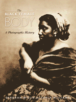

<body bgcolor="#FFFFFF" text="#000000" link="#0000FF" vlink="#CC0000" alink="#CC0000"><center><hr width="350" size="1" align="center" noshade>Recovering a photographic legacy<hr width="350" size="1" align="center" noshade><p><a href="https://cdcshoppingcart.uchicago.edu/Cart/ChicagoBook.aspx?ISBN=9781566399289&&PRESS=temple" target="_top">Buy this book!</a> | <a href="https://cdcshoppingcart.uchicago.edu/Cart/Cart.aspx?PRESS=temple" target="_top">View Cart</a> | <a href="https://cdcshoppingcart.uchicago.edu/Cart/Cart.aspx?PRESS=temple" target="_top">Check Out</a></p><p></p></center><!--none//--><h1>The Black Female Body</h1>
<H2>A Photographic History</H2>
<h3>Deborah Willis and Carla Williams</h3>
<P>cloth 1-56639-928-9 $64.00, Jan 02, <FONT COLOR=#990033>Out of Stock Unavailable</FONT>
<BR> 240 pp
9x12
185&nbsp;duotones 26&nbsp;color&nbsp;illustrations
</P><h3 align="center"><P><font color="#996633">Finalist for the Publishers Marketing Association's Ben Franklin Award, Reference Category,
2003</font></P>
<P><font color="#996633">Outstanding Academic Title, <i>Choice</i>,
2002</font></P>
<P><font color="#996633">National Gold Ink Bronze Award,
2002</font></P>
</H3>
<BLOCKQUOTE><I>"This publication&#151copiously illustrated and rigorously researched&#151demonstrates the complexities of deconstructing images of females of African descent within the medium of photography. Deborah Willis and Carla Williams demonstrate how the paradigm of the gaze, the idioms of subjectivity, agency and identity, and the modality of the observer versus the observed falter in the case of black women&#151slave/free, gay/straight, worker/bourgeoisie&#151and mutate when race and economics interface with gender and sexual preference. This invaluable study will be the starting point for future research and will explode the consciousness of practitioner, subject and patron with regard to the politics of imagery."</I>
<br>&#151<b>Lowery Stokes Sims</b>, PhD, Director, The Studio Museum in Harlem<I></I></BLOCKQUOTE>
<p>Searching for photographic images of black women, Deborah Willis and Carla Williams were startled to find them by the hundreds. In long-forgotten books, in art museums, in European and U.S. archives and private collections, a hidden history of representation awaited discovery. <I>The Black Female Body</I> offers a stunning array of familiar and many virtually unknown photographs, showing how photographs reflected and reinforced Western culture's fascination with black women's bodies.
<p>In the nineteenth century, black women were rarely subjects for artistic studies but posed before the camera again and again as objects for social scientific investigation and as exotic representatives of faraway lands. South Africans, Nubians, enslaved Abyssinians and Americans, often partially or completely naked and devoid of identity, were displayed for the armchair anthropologist or prurient viewer. Willis and Williams relate these social science photographs and the blatantly pornographic images of this era with those of black women as domestics and as nursemaids for white children in family portraits. As seen through the camera lens, Jezebel and Mammy took the form of real women made available to serve white society.
<p>Bringing together some 185 images that span three centuries, the authors offer counterpoints to these exploitive images, as well as testaments to a vibrant culture. Here are nineteenth century portraits of well-dressed and beautifully coifed creoles of color and artistic studies of dignified black women. Here are Harlem Renaissance photographs of entertainer Josephine Baker and writer Zora Neale Hurston. Documenting the long struggle for black civil rights, the authors draw on politically pointed images by noted photographers like Dorothea Lange, Louis Hines, and Gordon Parks. They also feature the work of contemporary artists such as Ming Smith Murray, Renee Cox, Coreen Simpson, Chester Higgins, Joy Gregory, and Catherine Opie, who photograph black women asserting their subjectivity, reclaiming their bodies, and refusing the representations of the past.
<p>A remarkable history of the black woman's image, <I>The Black Female Body</I> makes an exceptional gift book and keepsake.
<BR>&nbsp;<h2>Excerpt</h2><P>Excerpt available at <a href="http://www.temple.edu/tempress">www.temple.edu/tempress</a></p>
<BR>&nbsp;<h2>Reviews</h2>
<p><I>"Deborah Willis and Carla Williams are uniquely qualified guides to the taboo subject of the black female body. As highly educated black women who are also trained artists they bring an informed and sensitive perspective to a subject that has never before been studied from a historical and aesthetic viewpoint. They have sleuthfully pursued images of black women in collections around the world and have gathered the very best and most important examples into this anthology. As good historians they use the past as a map for the present. We find reproduced and analyzed here examples from the earliest photographs of black women by European photographers of the 1840s, to Edward Weston in California of the 1930s, to Lorna Simpson in New York of the 1990s. It will be a long time before this book is surpassed."</I>
<br>&#151<b>Weston Naef</b>, Curator of Photographs, The J. Paul Getty Museum
<p><I>"A fascinating and complex journey through a heretofore unlit passage of the history of photography. Well-documented for scholarly use but highly readable. Recommended for anyone interested in a broader understanding of the powerful relationship between representation and culture."</I>
<br>&#151<b>Katherine C. Ware</b>, Curator of Photographs, The Philadelphia Museum of Art
<p><I>"</I>The Black Female Body: A Photographic History<I>, with its superlative introductory essay by Deborah Willis and Carla Williams, impacts many of our conventional views, and it does so with substantial force. An astonishing collection of previously unfamiliar images, the book compels us to re-imagine much of what we thought we knew about African and African American history and culture."</I>
<br>&#151<b>Henry Louis Gates, Jr.</b>, W.E.B. Du Bois Professor of the Humanities, Harvard University
<p><I>"</I>The Black Female Body: A Photographic History<I> is an invaluable source book for artists and scholars who are interested in how image technologies have shaped our vision of the world and its inhabitants. Some of the photographs in the book are well known while others emerge for public viewing for the first time in decades. Still, the power of this book lies in the editors� efforts to bring all these photographs together and assess the multiple relationships among them. In doing so they have uncovered a racial grammar
that runs across genres, continents, and historical periods. This is truly groundbreaking work."</I>
<br>&#151<b>Coco Fusco</b>, Associate Professor School of the Arts, Columbia University
<p><i>"[A] meticulous presentation of old photos...urging a reevaluation of the modes and means by which the iconic figure of the black female body has been constructed."</i>
<br>&#151<b><i>Camerawork: A Journal of Photographic Arts</i></b>
<p><i>"With its insightful analysis and potent content, it is more than just a coffee-table book. In fact, the visceral nature of some of the 185 photographs included between its beautifully designed covers may be disturbing for the casual or immature reader."</i>
<br>&#151<b><i>The Women's Review of Books</i></b>
<p><i>"The book offers a visual history of photography while simultaneously chronicling the long struggle for civil rights and the socio-political impact of artistic expression."</i>
<br>&#151<b><i>Ebony</i></b>
<p><i>"...the authors introduce more than 200 photographs and likely the most comprehensive historical and socio-cultural analysis ever offered of such images."</i>
<br>&#151<b><i>The New Crisis</i></b>
<p><i>"...a fascinating survey of photographic representations of black women of African descent.... On one level, it is a winding excursion through an under-examined photographic legacy that continues to influence how black women are viewed by themselves and others. On another level, it is an adroit study of the role representation plays in the construction of identity, perpetuation of culture and distribution of power."</i>
<br>&#151<b><i><Afterimage</i></b>
<p><i>"This landmark book brings an important marginalized group to center stage through an extraordinary contribution to the study of photography, art history, women and gender, and the African Diaspora."</i>
<br>&#151<b><i>African American Review</i></b>
<p><i>"This collection of rare and controversial photographs by itself makes </I>The Black Female Body<I> an important volume for the general reader, cultural historian or photo enthusiasts."</i>
<br>&#151<b><i>Black Issues Book Review</i></b>
<BR>&nbsp;<P><p>For a unique take on the Janet Jackson frenzy from the 2004 Super Bowl halftime show performance, read "<a href="../authors/1356_article.pdf">Body Baggage</a>" an article from Newsday.com, 8 February 2004, written by Carla Williams (pdf).
<p>Visit Williams' <a href="http://carlagirl.net/" target="new">carlagirl.net</a> website or look over the <a href="http://carlagirl.net/bfbillustrations.html" target="new">complete list of illustrations</a> for <I>The Black Female Body</I>.</P><BR>&nbsp;<br>
<h2>Contents</h2><P>
<p>Preface
<br>Acknowledgments
<br>Introduction
<p><b>Part I: Colonial Conquest</b>
<br>1. La V�nus Noire
<br>2. Ethnography, Photography, and the Grand Tour
<br>3. The Body at Labor
<br>4. World's Fairs and Expositions
<br>5. The <I>National Geographic</I> Aesthetic
<p><b>Part II: The Cultural Body</b>
<br>6. The Noble Body
<br>7. The Conscious Body
<br>8. The Artist's Model
<br>9. Bawdy Bodies
<br>10. The Lesbian Body
<br>11. The Body at Labor, Revisited
<p><b>Part III: The Body Beautiful</b>
<br>12. The New Negro in Photography
<br>13. Perception of Beauty
<br>14. The Construction of Beauty
<br>15. Autobiography of the Body
<p><b>Conclusion: Reclaiming Bodies and Images</b>
<p>Notes
<br>References
<br>Index
<br>Color plates
</P><BR>&nbsp;<H2>About the Author(s)</H2>
<table><tr><td valign="top"><img src="/tempress/authors/1356_au1.gif" height="90" width="75"></td><td width="100%" valign="middle"><p><b>Deborah Willis</b> is Professor of Photography in the Tisch School of the Arts, NYU and the author of <I>Reflections in Black: A History of Black Photographers, 1840 to the Present</I>.</P></td></tr></table><P><b>Carla Williams</b> is a writer and photographer.</P>
<BR><H2>Subject Categories</H2>
<p><A HREF="/tempress/african.html" TARGET="_top">African American Studies</a>
<BR><A HREF="/tempress/art.html" TARGET="_top">Art and Photography</a>
<BR><A HREF="/tempress/women.html" TARGET="_top">Women's Studies</a>
</p>
<p align="center"><a href="https://cdcshoppingcart.uchicago.edu/Cart/ChicagoBook.aspx?ISBN=9781566399289&&PRESS=temple" target="_top">Buy this book!</a> | <a href="https://cdcshoppingcart.uchicago.edu/Cart/Cart.aspx?PRESS=temple" target="_top">View Cart</a> | <a href="https://cdcshoppingcart.uchicago.edu/Cart/Cart.aspx?PRESS=temple" target="_top">Check Out</a></p><p><font face="Arial" size="1"><a href="copyright.html" onMouseOver="window.status='Web Copyright Policy';return true;" onMouseOut="window.status=''" title="Web Copyright Policy">&copy;</a> 2015 <a href="http://www.temple.edu" target="new" onMouseOver="window.status='Link to Temple University home page';return true;" onMouseOut="window.status=''" title="Link to Temple University home page">Temple University</a>. All Rights Reserved. http://www.temple.edu/tempress/titles/1356_reg.html</font></p>